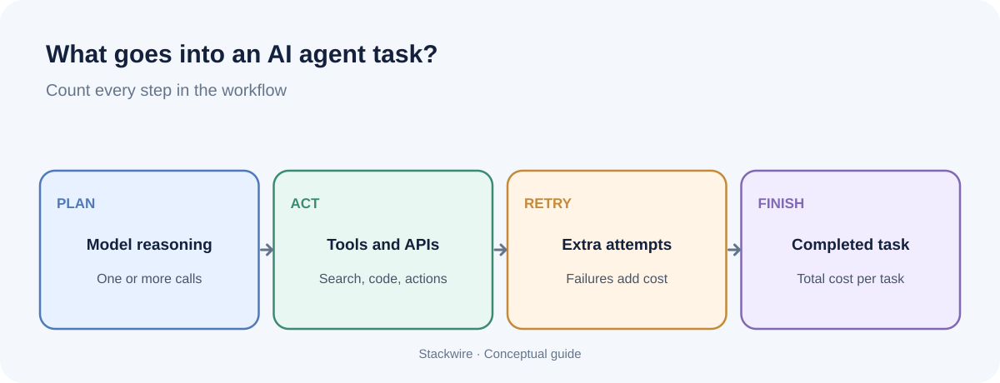

SaaS and AI
How much does an AI agent cost? A practical cost breakdown
An AI agent can make one model call or run a multi-step workflow involving search, tools, memory and retries. That is why the price of the model alone is a poor estimate of what an agent costs. To budget accurately, calculate the cost of a completed task from the full workflow.

AI agent cost depends on model input and output tokens, the number of model calls, paid tools, retrieval or search, storage and compute, retries, and human review. Map one typical task, measure every step, calculate the average cost per successful completion, then multiply by expected monthly tasks.
Why an AI agent costs more than one prompt
A simple chatbot may send a message to a model and return the answer. An agent can decide what to do next, call a tool, inspect the result, ask the model to reason again and repeat until the task is complete. Each model invocation can create token charges, and tools may have their own pricing.
For example, a research agent might classify a request, search a knowledge base, open two sources, summarize them and produce a final response. Counting only the final response misses the earlier model calls and external services.
List every cost component
| Component | What to measure |
|---|---|
| Model calls | Input tokens, output tokens, model choice and number of calls |
| Tool usage | Search, code execution, browser, external APIs and per-call charges |
| Retrieval | Embedding generation, vector database reads/writes and retrieved context |
| Memory and storage | Database, logs, file storage and retention |
| Infrastructure | Compute, orchestration, queues, networking and monitoring |
| Retries and failures | Repeated calls, timeouts, invalid outputs and abandoned tasks |
| Human review | Minutes spent checking or correcting agent output |
Some items are fixed monthly costs, while others scale with each task. Keep them separate in your spreadsheet so you do not accidentally count a monthly platform subscription as a per-request fee.
Calculate the model cost for each step
For each model invocation, use the provider's current input and output prices:
(Input tokens ÷ 1,000,000 × input price per million) + (Output tokens ÷ 1,000,000 × output price per million).
Repeat this calculation for every call in the workflow. If a model call uses cached input, a batch rate or a special context tier, apply the relevant price category rather than treating all tokens as identical. The provider's usage response is more reliable than estimating token counts from word counts.
For a deeper explanation, read our guide to calculating AI API costs before shipping a feature.
A worked example: one agent task
Suppose an internal research agent completes a task using three model calls. The following prices and usage are hypothetical and are included only to demonstrate the arithmetic. They are not current provider rates.
| Step | Input tokens | Output tokens | Assumed cost |
|---|---|---|---|
| Plan the task | 2,000 | 300 | $0.0032 |
| Review retrieved evidence | 5,000 | 500 | $0.0070 |
| Write final result | 3,000 | 800 | $0.0062 |
| Total model charges | 10,000 | 1,600 | $0.0164 |
Now add hypothetical tool and infrastructure costs of $0.02 per task. The estimated total is $0.0364 per completed task before human review and shared monthly platform costs. At 10,000 completed tasks, the variable total would be $364. Replace every assumption with measured usage and the exact rates for your selected providers.
Do not forget unsuccessful runs
Agents do not always finish on the first attempt. A tool may fail, the model may return an invalid argument, the search may return poor evidence or a task may exceed its time limit. If you measure only successful low-cost traces, you will understate the budget.
Track cost for every run, including failures. Then calculate:
- Cost per attempt: total variable cost divided by all attempts.
- Cost per successful task: total variable cost divided by completed tasks that meet your quality criteria.
- Success rate: successful tasks divided by all attempts.
- Human correction rate: completed tasks that need material human changes divided by completed tasks.
The cost per successful task is often the most useful business metric. A cheap agent that fails frequently may cost more than a higher-priced model that completes the task reliably.
Build three monthly scenarios
Estimate monthly usage at three levels. Keep the assumptions visible rather than hiding them in one total.
| Scenario | Tasks/month | Cost/task | Variable cost |
|---|---|---|---|
| Low | 1,000 | $0.0364 | $36.40 |
| Base | 10,000 | $0.0364 | $364.00 |
| High | 50,000 | $0.0364 | $1,820.00 |
This simple scenario holds unit cost constant. Real agent costs may rise with longer conversations, more tool calls, bigger documents or heavier customers. Build a separate high-usage unit-cost assumption if your product's usage distribution supports it.
Ways to reduce agent costs without damaging quality
- Remove unnecessary steps. Ask whether every planning or reflection call changes the final result. Do not add model calls just because an agent framework makes them easy.
- Use the right model for each task. A small classification step may not need the same model as a complex final synthesis. Test quality before switching.
- Limit tool loops. Set clear stop conditions, timeouts and maximum tool calls. Give the agent a useful fallback when a tool fails.
- Retrieve less, but better. Return relevant passages rather than entire documents. Evaluate retrieval quality so context reduction does not remove necessary evidence.
- Cache repeatable work. Cache stable outputs or repeated context where it is safe and supported. Respect freshness and user permissions.
- Measure before optimizing. Compare cost per successful task and quality, not just raw token spend.
How to monitor agent cost in production
Log a task ID, customer or tenant identifier, model name, token usage, tool name, tool duration, retries, final status and human review outcome. Avoid logging sensitive customer content unless you have a clear lawful purpose, retention policy and access controls.
Build a dashboard for cost per task, cost per customer, success rate, tool error rate, average steps, p95 latency and human correction rate. Set alerts for sudden changes, such as a spike in model calls per task or a loop that repeatedly invokes the same tool.
Evaluate agent quality with a representative set of real tasks. A change that reduces cost but lowers accuracy or increases human review may not be an improvement. See the OpenAI evaluation best practices for guidance on creating task-specific tests.
Frequently asked questions
How much does one AI agent task cost?
There is no universal price. A short single-call task can be inexpensive, while a multi-step agent with search, tools, large context and retries can cost considerably more. Measure the full workflow and divide by successful completions.
Are AI agents more expensive than chatbots?
They can be, because agents may make multiple model calls and use external tools. But a well-designed agent can also complete a valuable workflow that would otherwise require substantial manual work. Compare total cost with the value and quality of the completed task.
What is the biggest cost driver for an AI agent?
It depends on the workflow. Model calls and long context can dominate, but paid search, external APIs, compute, retries or human review may be material. Instrument the system before assuming which component is largest.
How do I set a budget for an AI agent?
Measure representative tasks, estimate cost per successful completion, model low/base/high monthly volume, include fixed platform costs and set alerts for abnormal usage. Recalculate after significant prompt, model or workflow changes.
Can I use a cheaper model to reduce agent costs?
Possibly. Test the cheaper model on representative tasks and compare success, factual accuracy, tool selection, latency and human correction. The lowest API price is not necessarily the lowest cost per successful task.
Continue with AI feature pricing, AI API cost calculation and RAG vs fine-tuning.